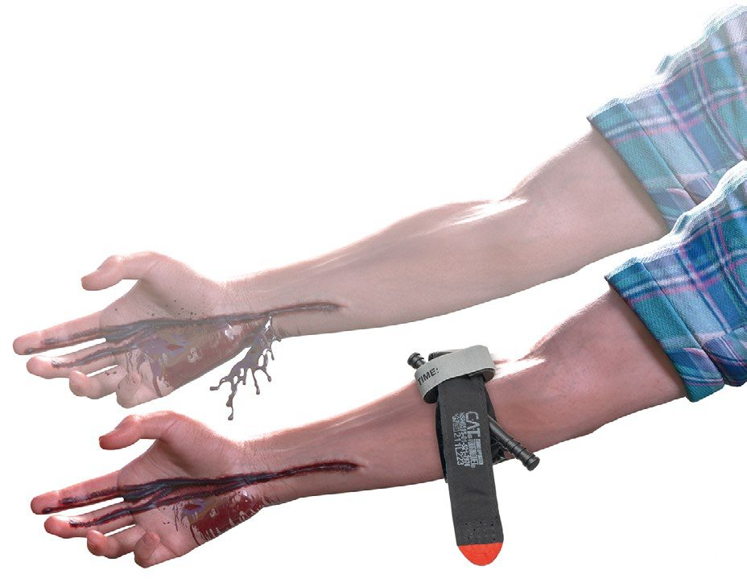

ATLS Primary and Secondary Survey
Summary
- Advanced Trauma Life Support (ATLS) is the globally adopted standard for the initial assessment of the injured patient, built around a primary survey that identifies and treats immediately life-threatening conditions in priority order, followed by a secondary survey that is a comprehensive head-to-toe examination to uncover other injuries [1][2].
- The course was first developed after a 1978 Nebraska plane crash and has been adopted throughout the world, training more than 1 million providers [1].
- ATLS rests on three core concepts: treat the greatest threat to life first, lack of a definitive diagnosis should not delay urgent treatment, and a detailed history is not essential to begin evaluation and treatment [1].
- Maingot's observes that only the emergency care disciplines of surgery and medicine have a two-tier approach to initial assessment, with primary and secondary surveys as integral components [3].
- UK trauma care is governed by a pair of NICE guidelines published together in 2016: NG39, major trauma, assessment and initial management, which is written for the clinician at the bedside, and NG40, major trauma, service delivery, which is written for ambulance and hospital trust boards, medical directors and senior managers.
- Recommendations in both apply to children under 16 and adults 16 or over unless otherwise specified [4][5].
- Neither replaces ATLS as a course, but between them they alter several of its component steps in ways set out through the sections below.
- The first recommendation of NG39 is a destination rule, not a clinical one: the optimal destination for patients with major trauma is usually a major trauma centre, and in some locations or circumstances intermediate care in a trauma unit might be needed for urgent treatment, in line with agreed practice within the regional trauma network [4].
- NG40 puts the same rule to pre-hospital providers with two additions: spend only enough time at the scene to give immediate life-saving interventions, and divert to the nearest trauma unit only if the patient needs a life-saving intervention the pre-hospital team cannot deliver [5].
- Trauma units are told to spend only enough time to give life-saving interventions before transferring on, and to be aware that the major trauma centre is the ultimate destination for definitive treatment [5].
Definition
ATLS is a systematic, rapid initial assessment protocol comprising preparation, triage, primary survey (ABCDE), resuscitation, secondary survey, continued monitoring and re-evaluation, and definitive care [2]. The primary survey is designed to quickly detect and address life-threatening injuries using a universal prioritized sequence; the secondary survey is a detailed, comprehensive clinical evaluation performed only once the primary survey and resuscitation have normalized vital functions [3].
Maingot's states the sequence and the reasoning behind its order in one place [3]:
| Step | Content |
|---|---|
| A | Airway maintenance, with protection of the cervical spine |
| B | Breathing (ventilation) |
| C | Circulation, including haemorrhage control |
| D | Disability (neurological status) |
| E | Exposure and environmental control |
Table reformats the ABCDE prioritisation [3]. Such a systematic and methodical approach greatly assists the surgical and medical team in the timely management of those injuries that could result in a poor outcome [3].
The primary survey's targets in Schwartz's account
Trauma is the commonest cause of death from age 1 to 44 and the third commonest overall; the primary survey exists to find and treat the immediately life-threatening injuries, airway obstruction or injury; tension and open pneumothorax, massive tracheobronchial air leak and flail chest with pulmonary contusion; haemorrhagic shock from massive haemothorax, massive haemoperitoneum, a mechanically unstable bleeding pelvis or extremity loss, cardiogenic shock from tamponade, and neurogenic shock; and intracranial haemorrhage and cervical spine injury, with the caveat that restoring circulating volume may sometimes precede active airway intervention because positive pressure in a hypovolaemic patient can precipitate arrest [6].
Pathophysiology
- ATLS teaching recognizes that injury kills in reproducible time frames and in a common sequence: loss of airway, inability to breathe, and loss of circulating blood volume, followed by expanding intracranial mass [2].
- Trauma deaths occur in three temporal peaks: the first, 0–30 minutes, from unsurvivable lacerations of the heart, aorta, brain, brainstem, or spinal cord; the second, 30 minutes to 4 hours (the "golden hour") from head injury and haemorrhage, which are salvageable with rapid assessment; and the third, days to weeks, from multisystem organ failure and sepsis [7].
- Loss of a secure airway can be lethal within four minutes, which is why airway takes absolute priority in the primary survey regardless of mechanism [3].
- Maingot's frames each letter of the sequence as a physiological failure mode. An airway can be adequately established and optimal ventilation still not be achieved, for example with an associated tension pneumothorax, a substantial haemothorax, an open pneumothorax, or a large flail segment, so assessment of breathing is imperative even when the airway is established and secure, because a patent airway with poor gas exchange still results in a poor outcome [3].
- The signs of inadequate gas exchange are tachypnoea, absent breath sounds, percussion hyperresonance, distended neck veins and tracheal deviation [3].
- For circulation, decreased level of consciousness, pale skin colour, slow or non-existent capillary refill, cool body temperature, tachycardia and diminished urinary output all suggest inadequate tissue perfusion [3].
- For disability, the caveat Maingot's highlights is that neurological deterioration can occur rapidly, and a patient with a devastating injury can have a lucid interval, as in extradural haematoma; because the leading causes of secondary brain injury are hypoxia and hypotension, adequate cerebral oxygenation and perfusion are essential [3].
Clinical features
- Airway compromise is suggested by disordered speech, agitation, noisy breathing (stridor), inhalation exposure history, and visible facial trauma such as mandibular fracture, burns, penetrating injury, or oropharyngeal blood or foreign body [1].
- Breathing compromise is suggested by paradoxical chest wall movement, retractions, hypoxia, cyanosis, decreased or absent breath sounds, tracheal deviation, and distended neck veins, features of tension pneumothorax, open pneumothorax, massive haemothorax, or flail chest [1][2].
- Circulatory compromise or shock is indicated by agitation or confusion, tachycardia, tachypnoea, diaphoresis, cool mottled extremities, weak distal pulses, decreased pulse pressure, decreased urine output, and hypotension [1].
- Neurological disability is assessed via the AVPU scale (Alert, responds to Vocal stimuli, responds to Painful stimuli, Unresponsive) and the Glasgow Coma Scale [2][8].
Maingot's is explicit that the neurological examination in the primary survey is deliberately minimal: only a baseline neurological examination is required, sufficient to detect subsequent deterioration that might necessitate surgical intervention, and it is inappropriate to attempt a detailed neurological examination initially, that belongs in the secondary survey [3]. The baseline may be the GCS with emphasis on best motor and verbal response and eye opening, or the faster alternative of pupillary size and reaction plus level of consciousness on the AVPU pattern [3].
- For the vascular examination in the secondary survey, Oxford separates hard from soft signs. Hard signs, external pulsatile bleeding, an expanding or pulsatile haematoma, absent or diminished distal pulses, a palpable thrill or audible bruit, and signs of distal ischaemia, mean the patient requires urgent operative intervention. Soft findings are a history of active bleeding at the scene, proximity of penetrating or blunt trauma to a major artery, a small non-pulsatile haematoma, and neurological deficit [2].
- Distal systolic Doppler pressures of the injured limb should be compared with the uninjured brachial systolic pressure, and an index below 0.9 is a predictor of arterial injury [2].
- A rapidly expanding haematoma suggests a significant vascular injury [2].
Airway and breathing assessment in Schwartz's detail
- A conscious patient with a normal voice and no tachypnoea rarely needs early airway intervention, except with a penetrating neck wound and expanding haematoma, chemical or thermal injury of mouth, nares or hypopharynx, extensive cervical subcutaneous air, complex maxillofacial trauma or airway bleeding, where pre-emptive intubation precedes swelling; abnormal voice or breath sounds, tachypnoea or altered mental status (the commonest indication for intubation, agitation often reflecting hypoxia rather than intoxication) prompt further assessment; suction, chin lift or jaw thrust and an oral or nasal airway relieve obstruction by blood, vomit, tongue, teeth or foreign body; definitive airway is indicated for apnoea, inability to protect the airway, impending compromise from inhalation injury, haematoma, facial bleeding, swelling or aspiration, and failure of oxygenation [6].
- Tension pneumothorax is presumed with respiratory distress and hypotension plus tracheal deviation, reduced breath sounds or subcutaneous emphysema, neck veins may be flat with hypovolaemia, and hypotension is what distinguishes tension from simple pneumothorax; open pneumothorax equilibrates pleural and atmospheric pressure so the lung cannot inflate; flail chest (three or more contiguous ribs fractured in two places) shows paradoxical movement, but the respiratory failure comes from the underlying contusion's reduced compliance and shunt, which blossoms over the first 12 hours so that the admission film underestimates it; tracheobronchial injuries within 2 cm of the carina (type I) may lack a pneumothorax because the mediastinal pleura envelops them, while more distal type II injuries present with pneumothorax, and bronchoscopy defines both [6].
- Pulses approximate pressure (carotid palpable at a systolic of 60 mmHg, femoral at 70, radial at 80) any systolic under 90 is haemorrhage until proven otherwise, rapid massive loss may cause paradoxical bradycardia (an ominous sign), the critical issue is the change in heart rate over time (a fit patient's resting 50s rising to the 90s is significant), β-blocked patients cannot compensate, hypotension appears only after 30% loss, the young hold pressure until the verge of arrest, and pregnant women lose proportionately more before signs appear; class I loss (<750 mL, <15%) shows pulse under 100, respiratory rate 14–20, urine over 30 mL/h and slight anxiety, class II (750–1500, 15–30%) pulse over 100, narrowed pulse pressure, rate 20–30, urine 20–30, class III (1500–2000, 30–40%) pulse over 120, hypotension, rate 30–40, urine 5–15 and confusion, class IV (>2000, >40%) pulse over 140, rate over 35, negligible urine and lethargy [6].
- The GCS sums best eye (4 spontaneous, 3 to voice, 2 to pain, 1 none), verbal (5 oriented, 4 confused, 3 inappropriate words, 2 incomprehensible, 1 none; in infants alert vocalisation, consolable crying, persistent irritability, restless moaning, none) and motor (6 obeys, 5 localises, 4 withdraws, 3 abnormal flexion, 2 extension, 1 none) responses, 13–15 mild, 9–12 moderate and 8 or less severe; it must be recorded before neuromuscular blockade, subtle change may reflect hypoxia, hypercarbia, hypovolaemia or rising intracranial pressure, and neurogenic shock is often first suspected from paralysis, lax rectal tone or priapism [6].
Etiology
- Blunt trauma accounts for approximately 80% of all trauma, with the liver most commonly injured; penetrating trauma most commonly injures the small bowel [7].
- Haemorrhage is the most common preventable cause of death after injury [8][9].
- Major thoracic life-threatening injuries include tension pneumothorax, open pneumothorax, massive haemothorax, and flail chest with pulmonary contusion [2].
- Traumatic injury remains the leading cause of death both in the United States and worldwide, resulting in enormous economic and societal losses [3].
- In penetrating vascular injury, stab wounds cause most upper extremity vascular injuries while gunshot wounds cause the majority of lower extremity vascular injuries; blunt trauma causes more morbidity than penetrating injury because of associated fractures, dislocations and crush injuries to muscles and nerves [2].
Diagnosis
- The primary survey follows the sequence "xABCDE": exsanguinating external haemorrhage control, Airway with cervical spine protection, Breathing, Circulation, Disability, and Exposure and environmental control; the 11th edition of ATLS (2025) modified the traditional ABCDE sequence to xABCDE to prioritise immediate control of massive external haemorrhage [1][9].
- Adjuncts to the primary survey include continuous monitoring (pulse, non-invasive blood pressure, ECG, pulse oximetry, arterial blood gas), urinary and gastric catheters, and diagnostic studies such as lateral cervical spine, chest and pelvis X-rays, FAST, and CT [2].
- Diagnostic peritoneal lavage has largely been supplanted by FAST and eFAST because ultrasound is non-invasive and can be performed rapidly in the trauma bay [1].
- The secondary survey begins only after the primary survey is complete and vital signs have normalised; it comprises a head-to-toe physical examination together with the AMPLE history, Allergies, Medications, Past illness and pregnancy, Last meal, Events and Environment of injury [1][2].
- A tertiary survey, repeating the secondary survey pattern the day after admission once altered consciousness has resolved, is used to detect missed injuries, which may occur in 1%–40% of trauma patients [1][9].
The four FAST windows and their limits
- Bedside ultrasonography for the detection of cardiac and intra-abdominal injury is considered the standard of care in the diagnostic assessment of the acutely injured patient, and because it is non-invasive it can be performed simultaneously with resuscitation [3].
- Four windows are examined: the subxiphoid area for the pericardium, the left subcostal area for the splenorenal recess, the right subcostal area for Morison's pouch, and the suprapubic area for the pelvic cul-de-sac [3].
- Oxford renders the same four as "the four Ps", Morison's pouch, pouch of Douglas or pelvic, perisplenic, and pericardium [2].
- Fluid may indicate cardiac tamponade, intra-abdominal haemorrhage, hollow viscus perforation, haemoperitoneum or ascites [3].
- The numbers that matter are the detection threshold and the sensitivity. A threshold of at least 200 mL of fluid in the abdominal cavity is necessary for detection, so an intra-abdominal injury must be associated with that much free fluid to give a positive finding; reported sensitivities range between 73% and 88% with specificity between 98% and 100%, and accuracy 96% to 98% [3].
- Scanning the suprapubic area with the bladder distended, either before Foley placement or by instilling 150 to 200 mL of normal saline, enhances sensitivity for pelvic fluid [3].
- False positives arise from pre-existing ascites and false negatives from operator error or body habitus [3].
- The disposition rule Maingot's gives is that positive findings in stable patients can be further evaluated with CT, while unstable patients with a positive finding should go to theatre for emergent exploration [3].
- Diagnostic peritoneal lavage has an accuracy reported between 92% and 98% and remains an excellent tool for the workup of occult bowel injury, or in unstable patients when FAST is unavailable or its findings are questionable; in that situation a diagnostic tap is usually all that is necessary, and exploration is indicated when there is aspiration of greater than 10 mL of gross blood [3].
- Its pitfalls are a relatively high false positive rate, the risk of creating visceral injury, and poor sensitivity for retroperitoneal structures such as the pancreas and duodenum.
- Iatrogenic events are minimised by placing a Foley catheter and nasogastric tube first, and patients with pelvic fractures, suspected retroperitoneal haematoma, or pregnancy should undergo a supra-umbilical approach [3].
NICE prohibits the FAST-first algorithm that the textbooks describe, and this is the sharpest divergence on the page. Four recommendations sit together:
- Do not use FAST or other diagnostic imaging before immediate CT in patients with major trauma [4].
- Do not use FAST as a screening modality to determine the need for CT in patients with major trauma [4].
- Be aware that a negative FAST does not exclude intraperitoneal or retroperitoneal haemorrhage [4].
- Consider immediate CT for patients with suspected haemorrhage if they are responding to resuscitation or if their haemodynamic status is normal [4].
- Where FAST retains a role is in the patient who is not responding.
- In patients with suspected haemorrhage and haemodynamic instability who are not responding to volume resuscitation, limit diagnostic imaging (such as chest and pelvis X-rays or FAST) to the minimum needed to direct intervention [4].
- All imaging for suspected haemorrhage should be performed urgently and interpreted immediately by a healthcare professional with training and skills in that area [4].
For the stable, multiply injured adult the standard is whole-body CT, consisting of a vertex-to-toes scanogram followed by a CT from vertex to mid-thigh, in adults 16 or over with blunt major trauma and suspected multiple injuries; patients should not be repositioned during whole-body CT [4]. Clinical findings and the scanogram then direct CT of the limbs [4]. Do not routinely use whole-body CT to image children under 16, use clinical judgement to limit CT to the body areas where assessment is needed [4].

Adjuncts, mechanism and the sources of hidden blood loss in Schwartz's account
- The AMPLE history (allergies, medications, past illness or pregnancy, last meal, events) precedes a literal head-to-toe examination including back, axillae and perineum; every seriously injured patient has a rectal examination for tone, blood, perforation and a high-riding prostate, women with pelvic fractures a speculum examination for open fracture; adjuncts are ECG monitoring, a nasogastric tube in all intubated patients (oral with midfacial fractures; blood suggests gastroduodenal injury and an errant course on the film a left diaphragm tear), a urinary catheter (deferred for meatal blood, perineal or scrotal haematoma or high-riding prostate, one attempt in extremis then suprapubic cystostomy), chest and pelvic films (CT having replaced the lateral cervical film), AP and lateral truncal films with wound markers for gunshot wounds, trauma bloods with blood gas (routinely in patients over 55 who may be in subclinical shock) and repeat FAST for any sign of abdominal injury or unexplained loss; paramedics and police are questioned about speed, impact angle, seat position, restraints, airbags, steering wheel and windscreen, intrusion, ejection, fate of other occupants, fall height and surface, helmet, crushing weight, bullet and blade characteristics, and a stabbed patient may also have been beaten [6].
- Blunt injury spreads energy widely and injures the inelastic solid organs (liver, spleen, kidneys), penetrating injury follows a line and injures organs of largest surface area (small bowel, liver, colon) and their neighbours; high-energy transfer means auto-pedestrian collision, a velocity change over 20 mph or ejection, motorcycle crash or a fall over 20 feet, with death of another occupant, extrication over 20 minutes, lack of restraint and lateral impact strongly predicting life-threatening injury; the unrestrained frontal-impact driver pattern is facial and cervical fractures, descending aortic injury, myocardial contusion, splenic and hepatic injury and pelvic and lower-limb fractures, side impact adds diaphragm rupture and pelvic crush with one-sided solid organ injury; high-velocity bullets exceed 2000 ft/s and are rare in civilians, and shotgun wounds under 20 feet behave as high-velocity injuries [6].
- Persistent hypotension is worked through hemorrhagic, cardiogenic and neurogenic causes with ultrasound of pericardium, pleurae and abdomen plus chest and pelvic films, the pelvis sheeted, external bleeding controlled and fractures splinted, CVP or IVC ultrasound separating cardiogenic from hypovolaemic shock, and a base deficit over 8 mmol/L implying ongoing cellular shock; cardiogenic causes are tension pneumothorax (commonest), tamponade, blunt cardiac injury (in up to a third of significant blunt chest trauma but rarely haemodynamically important; ECG and troponin together exclude it before discharge, serial enzymes otherwise have no role, right ventricular dyskinesia is the usual echo finding), myocardial infarction (which may have caused the crash) and bronchovenous air embolism; five sites hide blood loss (scalp, chest, abdomen, pelvis and extremities) and fractures add up: 100–200 mL per rib, 300–500 for tibia, 800–1000 for femur and over 2000 for pelvis; FAST-negative unstable patients without another source undergo diagnostic peritoneal aspiration, and hypotensive patients go to CT only on a fast track with the surgeon present and ready to divert to theatre [6].
- Head examination covers scalp depth and depressed fractures, pupils, acuity and globe haemorrhage, ocular entrapment (a lateral canthotomy may be needed), hemotympanum, otorrhoea, rhinorrhoea, raccoon eyes and Battle's sign of basal skull fracture (associated with blunt cerebrovascular injury, cranial nerve palsy and meningitis), midface instability, the patient's sense of an abnormal bite, and briskly bleeding nasal fractures needing packing or balloon; CT of the head is indicated for GCS under 14 and for the elderly or anticoagulated even at 15, lateralising signs suggest a mass lesion, epidural haematomas are convex arterial (middle meningeal) collections after skull fracture with better prognosis than the concave venous or parenchymal subdurals, subarachnoid blood causes vasospasm, diffuse axonal injury from high-speed deceleration blurs the grey–white interface with punctate haemorrhages (MRI more accurate, early evidence carries poor outcome), stroke syndromes prompt CTA for carotid or vertebral injury, and supratentorial wounds crossing both hemispheres are virtually always fatal [6].
- Cervical CT is indicated for posterior midline tenderness, intubation, distracting injury, significant mechanism or another spinal fracture, with flexion–extension views or MRI for ligamentous injury; complete cord injury loses all function two or more levels below the bony lesion with rare recovery, whereas central cord syndrome (elderly hyperextension, upper limbs worse, partial recovery), anterior cord syndrome (motor, pain and temperature lost with preserved proprioception, vibration and crude touch, poor prognosis) and Brown-Séquard hemisection (ipsilateral motor, proprioception and vibration, contralateral pain and temperature) fare better [6].
Scoring and Severity
- The Glasgow Coma Scale, scored from eye opening (1–4), verbal response (1–5), and motor response (1–6), is calculated during the primary survey at "Disability" and re-evaluated at the secondary survey; a severe head injury is assumed at a GCS of 8 or less, which is also an indication for a definitive airway [1][2][9].
- The AVPU scale provides a faster, cruder alternative disability assessment [2][8].
- ATLS defines four classes of haemorrhagic shock based on blood loss volume and physiologic response [1].
- The Assessment of Blood Consumption score, a 4-point metric comprising penetrating mechanism, positive FAST, arrival systolic BP 90 mmHg or below, and arrival pulse above 120 bpm, can be used to trigger massive transfusion protocol activation [1].
Triage in mass casualty
- Triage is the process of prioritising treatment during a mass casualty event, and its governing principle is to do the most good with the available resources; the other principles are to make a decision, because time is the essence of triage, to understand the resources available, and to plan and rehearse [2].
- The categories are black for dead, red for priority 1 requiring immediate attention, yellow for priority 2 who can wait a short time for transport, and green for priority 3 who can be delayed before transport [2].
- Oxford's essential qualification is that retriage is not a one-time, one-place event: it is continuous and repetitive at each level [2].
- The fundamental principle of disaster management is to do the greatest good for the greatest number, in incidents where patient needs overwhelm the resources available to care for them, and the pre-hospital response occurs in four stages: a chaos stage of 15–20 minutes, an organisational phase of 1–2 hours, site clearing and evacuation, and gradual recovery [2].
- The UK triage tool is a network product, not a clinical score.
- Ambulance trusts must provide a pre-hospital major trauma triage tool to differentiate patients who should go to a major trauma centre from those who should go to a trauma unit for definitive management [5].
- The tool chosen must include assessment of both physiology and anatomical injury and must take into account the different needs of older patients, children and other high-risk populations such as patients taking anticoagulants, pregnant women and patients with comorbidities [5].
- Pre-hospital providers using it must be supported by immediate clinical advice from the ambulance control centre, trained in its use, and its use monitored and audited as part of the network's quality improvement programme [5].
- The team response differs by hospital tier, and one of the two recommendations is a prohibition.
- In trauma units, multispecialty trauma teams must be activated immediately to receive patients with major trauma, and a tiered team response must not be used [5].
- In major trauma centres, by contrast, a tiered team response may be considered, either a standard multispecialty trauma team, or that team plus specialist involvement such as a code red for major haemorrhage with mobilisation of transfusion, interventional radiology and surgery [5].
- Both tiers must have a paediatric trauma team available immediately for children under 16 [5].
- On scoring for major haemorrhage, NICE rejects the single-time-point risk tool.
- Physiological criteria that include the patient's haemodynamic status and their response to immediate volume resuscitation should be used to activate the major haemorrhage protocol [4], and a haemorrhagic risk tool applied at a single time point must not be relied on to determine the need for major haemorrhage protocol activation [4].
- That is a direct restriction on the way scores such as the Assessment of Blood Consumption score are used as an activation trigger.
Treatment and Management
Exsanguinating external haemorrhage (x): controlled immediately with direct pressure, wound packing with haemostatic dressings, and tourniquet application proximal to the wound if bleeding is not controlled by pressure, before formal airway management if necessary [1][9]. Tourniquet time of application must be recorded, and tourniquets should be converted to another method of haemorrhage control within 2 hours once shock has resolved and transport and monitoring conditions allow [1].
Airway (A): cervical spine motion restriction is maintained throughout; the airway is secured stepwise from suctioning, jaw thrust and chin lift and an oro- or nasopharyngeal airway to definitive orotracheal intubation, often with rapid sequence induction, or a surgical airway by cricothyroidotomy if intubation fails or is contraindicated [1][9]. Maingot's states the priority absolutely: no other management can take precedence over obtaining appropriate airway control, and until adequate and sustained oxygenation can be documented, 100% oxygen is required [3]. "Damage control airway manoeuvres", opening and maintaining the airway without immediate intubation while resuscitation proceeds, may reduce peri-intubation cardiovascular collapse in hypotensive patients [1].
- Breathing (B): all patients receive high-flow oxygen; tension pneumothorax is treated by immediate needle or finger decompression followed by tube thoracostomy without waiting for radiographic confirmation, as it is a clinical diagnosis [1][2].
- Open pneumothorax is occluded with a three-sided dressing followed by chest drain insertion through a separate incision [2].
- A large flail segment with underlying pulmonary contusion will likely require endotracheal intubation and positive pressure ventilation [3].
- Circulation (C): two large-bore IV cannulae of 16G or larger are placed and blood sent for cross-match and laboratory tests; a pelvic binder is applied to haemodynamically unstable blunt trauma patients and not removed until pelvic fracture is excluded [9].
- Maingot's specifies warmed crystalloid with a 2 litre bolus of Ringer's lactate or saline in severely compromised adults and 20 mL/kg in children, with blood and blood products as required [3].
- Permissive hypotension, targeting a systolic BP of 70–90 mmHg, or above 90 mmHg with suspected head injury, with small boluses of fluid is used until definitive haemorrhage control, minimising crystalloid; balanced blood-product resuscitation at 1:1:1 red cells to plasma to platelets via a massive transfusion protocol is preferred over crystalloid [1][9].
- Tranexamic acid, 1 g IV over 10 minutes then 1 g over 8 hours, reduces mortality from bleeding when given within 3 hours of injury [1][9].
- Maingot's gives the disposition logic explicitly: a FAST documenting substantial blood loss in the abdomen of a haemodynamically labile patient dictates emergency celiotomy, but if the workup of an unstable blunt trauma patient shows no blood loss from an open wound, the abdomen or the chest, then the source is likely pelvic, and angiography with embolisation of a probable arterial injury follows if external stabilisation with a commercial wrap or binder fails to stop the bleeding [3].
Disability (D): GCS and pupillary assessment are documented before sedation and intubation drugs are given; secondary brain injury is prevented by maintaining oxygenation and perfusion [1][2].
- Exposure (E): the patient is fully undressed for examination, often by cutting off the garments to expedite exposure, while active measures (warmed blankets, warmed intravenous fluids, an adjusted room temperature) prevent hypothermia, which worsens coagulopathy [1][3][9].
- Whole-body CT from head to pelvis with IV contrast is the gold-standard investigation for the haemodynamically stable, severely injured blunt trauma patient and should not be limited to selective body systems [9].
- Log-rolling and pelvic "springing" are avoided until pelvic fracture is excluded, as they can dislodge clot [9].
- Airway.
- Use drug-assisted rapid sequence induction of anaesthesia and intubation as the definitive method of securing the airway in patients with major trauma who cannot maintain their airway or ventilation [4]; if RSI fails, use basic airway manoeuvres and adjuncts and/or a supraglottic device until a surgical airway or assisted tracheal placement is performed [4].
- The timing target is explicit and has no textbook equivalent: aim to perform RSI as soon as possible and within 45 minutes of the initial call to the emergency services, preferably at the scene [4][5].
- If RSI cannot be performed at the scene, consider a supraglottic device if the airway reflexes are absent, use basic manoeuvres and adjuncts if reflexes are present or a supraglottic device cannot be placed, transport to a major trauma centre for RSI provided the journey time is 60 minutes or less, and divert to a trauma unit for RSI before onward transfer only if a patent airway cannot be maintained or the journey to a major trauma centre exceeds 60 minutes [4].
- Haemorrhage control and volume.
- Use simple dressings with direct pressure to control external haemorrhage, and in patients with major limb trauma use a tourniquet if direct pressure has failed to control life-threatening haemorrhage [4].
- If active bleeding is suspected from a pelvic fracture after blunt high-energy trauma, apply a purpose-made pelvic binder, or consider an improvised binder only if a purpose-made binder does not fit [4].
- Use intravenous tranexamic acid as soon as possible in patients with major trauma and active or suspected active bleeding [4], and do not use it more than 3 hours after injury unless there is evidence of hyperfibrinolysis [4]; in February 2016 this was an off-label use.
For circulatory access, use peripheral intravenous access, and if that fails consider intra-osseous access, in hospital, while central access is being achieved; in children under 16, consider intra-osseous access as first-line if peripheral access is anticipated to be difficult [4].
Three volume-resuscitation recommendations contradict the textbook account outright:
| NICE NG39 | What the textbooks say |
|---|---|
| In hospital settings do not use crystalloids for patients with active bleeding (1.5.23); pre-hospital, use crystalloid only if blood components are not available (1.5.22) | A warmed 2 litre bolus of Ringer's lactate or saline in the severely compromised adult, 20 mL/kg in children |
| For adults use a ratio of 1 unit of plasma to 1 unit of red blood cells to replace fluid volume (1.5.24), and for children 1 part plasma to 1 part red cells based on weight (1.5.25) | Balanced 1:1:1 red cells to plasma to platelets |
| Titrate volume resuscitation to maintain a palpable central pulse (carotid or femoral) pre-hospital (1.5.19), and in hospital move rapidly to haemorrhage control, titrating to maintain central circulation until control is achieved (1.5.20) | Permissive hypotension to a numeric target systolic of 70–90 mmHg |
- Table sets NICE's volume recommendations against the textbook figures cited above [4].
- The governing principle above all three is that for patients with active bleeding a restrictive approach to volume resuscitation is used until definitive early control of bleeding has been achieved [4].
- Hospital trusts should have specific major haemorrhage protocols for adults and for children, and for patients with active bleeding should start with a fixed-ratio protocol and change to a protocol guided by laboratory coagulation results at the earliest opportunity [4].
- Heat loss and pain.
- Minimise ongoing heat loss in patients with major trauma [4].
- Assess pain regularly using a scale suitable for the patient's age, developmental stage and cognitive function, and continue to assess pain in hospital using the same scale that was used pre-hospital [4].
- Use intravenous morphine as the first-line analgesic, adjusting the dose as needed; if intravenous access has not been established, consider the intranasal route for atomised diamorphine or ketamine; and consider ketamine in analgesic doses as a second-line agent [4].
- Spinal immobilisation is now selective, not universal.
- NG41 recasts the sequence as <C>ABCDE, catastrophic haemorrhage, airway with in-line spinal immobilisation, breathing, circulation, disability, exposure and environment, and requires the cervical spine to be protected with manual in-line immobilisation at all stages, particularly during any airway intervention, while avoiding movement of the rest of the spine [10].
- Full in-line spinal immobilisation is carried out if the person has significant distracting injuries, is under the influence of drugs or alcohol, is confused or uncooperative, has a reduced level of consciousness, has spinal pain, has hand or foot weakness, has altered or absent sensation in the hands or feet, has priapism, or has a history of past spinal problems including previous spinal surgery or a condition predisposing to instability, or if that assessment cannot be done at all [10].
- Cervical spine risk is then stratified with the Canadian C-spine rule [10], and the guideline states when not to immobilise: do not carry out or maintain full in-line spinal immobilisation if the person has low-risk factors, is pain free and is able to actively rotate their neck 45 degrees left and right [10].
- The stepwise technique is an appropriately sized semi-rigid collar unless contraindicated by a compromised airway or a known spinal deformity such as ankylosing spondylitis, reassessment of the airway after applying the collar, then a scoop stretcher, then head blocks and tape, ideally in a vacuum mattress [10].
- In uncooperative, agitated or distressed people including children, consider letting them find a position they are comfortable in with manual in-line immobilisation [10].


Airway, access, haemorrhage control and the resuscitation response in Schwartz's detail
- Orotracheal intubation with manual in-line immobilisation is the definitive route (verified by laryngoscopy, capnography, breath sounds and film; video laryngoscopy increasingly used), nasotracheal intubation only in spontaneously breathing patients when paralysis cannot be used, and cricothyroidotomy for failure or facial destruction, a generous vertical skin incision avoids the anterior jugular veins, the membrane is opened horizontally with the blade angled inferiorly away from the cords, a tracheostomy hook elevates the thyroid cartilage and a 6.0 tube (the adult maximum) is sutured in; it is relatively contraindicated under 11 for subglottic stenosis (tracheostomy instead), and laryngotracheal separation or laryngeal fracture after a "clothesline" injury needs tracheostomy in theatre through the wound or a collar incision, a non-crushing clamp on the distal trachea preventing retraction into the mediastinum [6].
- Tension pneumothorax gets a tube in the midaxillary line before any film (needle decompression with a 14-gauge cannula prehospital, the fifth space anterior axillary line now preferred for habitus); tube thoracostomy is done at the fourth or fifth space (inframammary crease) to spare liver and spleen, cutting over the rib with heavy scissors, exploring digitally for adhesions and directing a 28F tube posterosuperiorly; open pneumothorax is dressed on three sides as a flutter valve then closed with a remote tube, since full occlusion without a tube creates tension [6].
- Access is two 16-gauge or larger peripheral cannulas, then proximal humeral or tibial intraosseous needles (all drugs at the same dose; removed once alternatives exist to avoid osteomyelitis), 7–9F femoral or subclavian Cordis introducers rather than triple-lumens in shock, groin first so thoracic procedures are unimpeded, femoral for chest trauma and jugular or subclavian for abdominal trauma, the latter also giving a CVP to exclude tamponade, and saphenous cutdown 1 cm anterior and 1 cm superior to the medial malleolus taking a 14-gauge cannula even in collapsed veins; children under 6 get peripheral then intraosseous access, central or cutdown third; bloods include bedside haemoglobin, base deficit, cross-match and TEG or ROTEM [6].
- External bleeding is controlled with a single 4×4 gauze under a gloved hand (thick dressings hide loss), never blind clamping (nerves), a gloved finger on the vessel in neck, thoracic outlet or groin wounds with the surgeon walking the patient to theatre, digital pressure rather than tourniquets where possible since occlusion risks permanent neuromuscular loss and small-vessel thrombosis in shocked limbs, splinting of open fractures, and staples, Raney clips or a running nylon stitch for galeal scalp lacerations [6].
- Massive haemothorax is over 1500 mL (over 25% of blood volume in children), quantified reliably only by the tube, from intercostal vessels after blunt and great or hilar vessels after penetrating injury, an operative indication in which the tube still re-expands the lung and tamponades venous bleeding; tamponade follows as little as 100 mL acutely, Beck's triad is rarely appreciated, fluid transiently helps by raising CVP, ultrasound diagnoses it and ultrasound-guided pericardial drainage removing 15–20 mL stabilises the patient and relieves subendocardial ischaemia for transport to sternotomy, succeeding in about 80% (failures from clot), while persistent systolic pressure ≤60 mmHg demands resuscitative thoracotomy [6].
- Resuscitative thoracotomy is indicated for witnessed penetrating torso trauma with under 15 minutes of CPR, blunt trauma under 10 minutes, penetrating neck or extremity trauma under 5 minutes, and persistent systolic ≤60 mmHg from tamponade, intrathoracic, abdominal, extremity or cervical haemorrhage or air embolism, and contraindicated after over 15 minutes (penetrating) or 10 minutes (blunt) of CPR without pupillary, respiratory or motor signs of life or with asystole without tamponade; survival is 35% for isolated cardiac injury in shock and 20% without vital signs, 15% for all penetrating wounds, 2% for blunt trauma in shock and under 1% without vital signs; a generous left anterolateral fifth-space thoracotomy starting right of the sternum, longitudinal pericardiotomy anterior to the phrenic nerve, cardiac repair before adrenaline or calcium, two-handed hinged massage (one-handed risks thumb perforation), and aortic cross-clamp below the inferior pulmonary ligament just above the diaphragm (the flaccid aorta being the first structure on the spine from the left) improve central, cerebral and coronary flow, and a systolic of 70 mmHg afterwards defines resuscitability for transfer to theatre [6].
- Ringer's lactate starts resuscitation, but arrival in shock (persistent systolic under 90) now activates a massive transfusion protocol of red cells and plasma instead, type O cells (O-negative for women of childbearing age) and thawed AB plasma at 2:1 until type-specific blood arrives, TEG or ROTEM directing adjuncts and detecting fibrinolysis; adequate urine output is 0.5 mL/kg/h in adults, 1 in children and 2 in infants under 1 year but is too slow for the trauma bay; responders proceed to orderly work-up, non-responders to immediate source identification and intervention, and transient responders are the hardest to triage; clear operative indications, blunt trauma with massive haemothorax, penetrating trauma with over 1 L initial tube output, abdominal trauma with extensive haemoperitoneum on ultrasound, go straight to theatre after essential films with wound markers (a chest film for an upper abdominal gunshot wound, a film of the opposite hemithorax for a right chest wound), and an impaled weapon is removed only in theatre after exposure for vascular control, with preoperative imaging for knives in head or neck [6].
- Bronchovenous air embolism (air from an injured bronchus entering an adjacent pulmonary vein) classically arrests the stable penetrating-chest patient moments after positive pressure ventilation begins: Trendelenburg traps air in the left ventricular apex, emergency thoracotomy with hilar cross-clamping stops further entry, air is aspirated from the apex then the aortic root with an 18-gauge needle and 50 mL syringe, vigorous massage drives bubbles through the coronaries (a tuberculin syringe aspirates the right coronary if not), and the patient stays head-down with the hilum clamped until the venous injury is repaired [6].
- Neurogenic shock from high cord disruption is treated with volume and dopamine (inotropic, chronotropic and vasoconstrictor); an endogenous arterial sealing clot may be disrupted above a systolic of 90 mmHg so that is the preoperative target for potential non-compressible arterial injury, but traumatic brain injury needs a systolic over 100 mmHg so hypotensive resuscitation is inappropriate for most blunt trauma; all clothing is removed and warmed blankets applied immediately [6].
Surgeries
- Surgical airway by cricothyroidotomy is performed when intubation fails or is not feasible: a vertical skin incision over the cricothyroid membrane, transverse incision of the membrane, dilation, and insertion of a size 6 endotracheal tube, confirmed with capnography and bilateral auscultation [1].
- Maingot's states the same fallback rule: if translaryngeal endotracheal intubation cannot be achieved because of upper airway obstruction or technical difficulty, a needle or surgical cricothyroidotomy should be the alternative approach [3].
- Needle or finger thoracostomy for tension pneumothorax is performed at the second intercostal space in the midclavicular line, or the fifth intercostal space between the anterior and midaxillary lines, followed by formal tube thoracostomy [1][2].
- Resuscitative thoracotomy in the emergency department may be indicated in select patients, primarily penetrating thoracic injury with signs of life, to release cardiac tamponade, control cardiac or intrathoracic vascular injury, and cross-clamp the descending thoracic aorta [1].
- Emergent laparotomy or pelvic packing is indicated for haemodynamically unstable patients with a positive FAST or an unstable pelvic fracture with ongoing bleeding not controlled by an external binder [1][9].
Principles of vascular repair
- Oxford sets out the operative sequence for a vascular injury found at the secondary survey [2].
- Obtain proximal and distal control before exposing the injury; inspect the vessel and debride as necessary; remove intraluminal thrombus with a Fogarty catheter; flush the lumen with heparinised normal saline; consider temporary intraluminal shunting if the limb is ischaemic and there is a delay before anticipated revascularisation; and select the repair, lateral repair, patch angioplasty, end-to-end anastomosis, interposition graft or bypass graft, according to the extent of damage.
- Use systemic anticoagulation if there is no contraindication, consider intraoperative completion arteriography, and ensure the completed repair is free of tension and covered with viable soft tissue. In patients with combined vascular and orthopaedic injuries, perform the arterial repair first to restore circulation before orthopaedic stabilisation, and where there is massive soft tissue injury debride all non-viable tissue.
- Compartment syndrome should be anticipated, with fasciotomy to decompress all four compartments of the leg [2].
- Where the operation happens, and who does it.
- Hospital trust boards must ensure that interventional radiology and definitive open surgery are equally and immediately available for haemorrhage control in all patients with active bleeding [5].
- Within NG39, interventional radiology is not an alternative to surgery but has defined indications: use interventional radiology techniques in patients with active arterial pelvic haemorrhage unless immediate open surgery is needed to control bleeding from other injuries [4]; consider interventional radiology in patients with solid-organ arterial haemorrhage of the spleen, liver or kidney [4]; and consider a joint interventional radiology and surgery strategy for arterial haemorrhage extending into surgically inaccessible regions [4]. Use an endovascular stent graft in patients with blunt thoracic aortic injury [4].
The decision between damage control and definitive surgery is stated as three parallel recommendations keyed to the response to volume resuscitation [4]:
| Haemodynamic status | NICE NG39 |
|---|---|
| Unstable and not responding to volume resuscitation | Use damage control surgery (1.5.37) |
| Unstable but responding to volume resuscitation | Consider definitive surgery (1.5.38) |
| Haemodynamic status normal | Use definitive surgery (1.5.39) |
Table reformats the damage control criteria [4]. Note the verbs: "use", "consider", "use", the middle case, the responder, is the only one where NICE leaves the choice open.
- Transfer between hospitals has a clock.
- Trust boards must provide a protocol for the safe and rapid transfer of patients needing definitive specialist intervention, train clinical staff in it, and review it regularly [5].
- Senior managers and emergency department staff must ensure that patients with major trauma who need critical interventions at a major trauma centre leave the sending emergency department within 30 minutes of the decision to transfer [5].

Complications
- Missed injuries occur in 1%–40% of trauma patients, of which 15%–22% are clinically significant, related to altered consciousness, emergency surgery, and distracting injuries, and mitigated by the tertiary survey [1].
- Maingot's makes the same point from the other direction: the head-to-toe front-and-back secondary survey must be performed in a detailed and systematic fashion to detect less obvious or occult injuries, and this is particularly important in the unevaluable patient, meaning the patient with a head injury or severe intoxication [3].
- It describes the unevaluable abdomen in a patient with an associated closed head injury or substantial intoxication with a depressed sensorium as a perplexing dilemma that remains, irrespective of an unprecedented myriad of advanced technology [3].
- Prolonged tourniquet application beyond 2 hours causes amputation, rhabdomyolysis, and neuropathy [1][8].
- Excessive crystalloid resuscitation worsens acidosis, causes coagulopathy, and is associated with ARDS; hypothermia from inadequate exposure and environment management exacerbates coagulopathy and acidosis [1][8][9].
- Formal log-rolling and pelvic springing in a patient with an undiagnosed pelvic fracture can dislodge stabilising clot and provoke rebleeding [9].
- Documentation is the mechanism NICE uses to prevent missed injuries, and the required record is the primary survey itself.
- In pre-hospital settings, record catastrophic haemorrhage, airway with in-line spinal immobilisation, breathing, circulation, disability, and exposure and environment (that is, <C>ABCDE) and if possible record whether the assessments show the patient improving or deteriorating [4].
- Pre-alert information must be recorded using a structured system and include the patient's age and sex, time of incident, mechanism of injury, injuries suspected, signs including vital signs and Glasgow Coma Scale, treatment so far, estimated time of arrival, special requirements, and the ambulance call sign with the name of the person taking the call and the time of the call [4][5].
- In hospital, a senior nurse or trauma team leader receives the pre-alert and determines the level of trauma team response according to agreed written local guidelines; the trauma team leader should be easily identifiable to receive the handover [4].
- The same <C>ABCDE items are recorded as a minimum for the primary survey [4]. One member of the trauma team should be designated to record all trauma team findings and interventions as they occur, taking contemporaneous notes, and the trauma team leader is responsible for checking that the record is complete [4].
- Handover within the emergency department, including at shift changes, and to other departments must follow a structured process and be documented, and all patient documentation including images and reports must go with patients when they are transferred [4].
- A written summary giving the diagnosis, management plan and expected outcome must be aimed at and sent to the patient's GP within 24 hours of admission, include a summary in plain English understandable by patients, family members and carers, and be readily available in the patient's records [4].
Missed injuries are also addressed at system level. Trust boards must ensure a major trauma audit programme evaluating systems, services and processes, which includes regular review of local and regional audits, registration with the National Major Trauma Register, accurate and complete data submission to it, and quarterly review of its reports [5].
Special populations (pregnancy, age and childhood) in Schwartz's account
- Seven percent of pregnant women are injured, 70% by vehicles or falls, only 11% of fetal deaths following maternal death, and domestic violence affects 10–30% with 5% fetal mortality; heart rate rises 10–15 bpm from the first trimester, pressure falls through two trimesters (means 105/60, 102/55, 108/67), intravascular volume rises up to 8 L so 35% may be lost before shock shows, tidal and minute volumes rise and functional residual capacity falls giving respiratory alkalosis and rapid desaturation especially supine or at intubation, the fetal dissociation curve sits on the steep left portion so supplemental oxygen is critical, lavage is supraumbilical and open with the catheter cephalad, chest tubes risk the raised diaphragm, the lower oesophageal sphincter is lax, alkaline phosphatase nearly doubles, albumin falls to about 3.0 g/dL, renal flow rises 30% lowering urea and creatinine, ureters and bladder may be compressed, haemoglobin under 11 is abnormal, leukocytosis reaches 20,000 and factors VII–X and XII rise with reduced fibrinolysis [6].
- The mother has priority while the fetus is optimised (oxygen, fluid (hypervolaemia masks shock), left lateral tilt to decompress the cava) fetal heart rate is documented by FAST then cardiotocography (over 160 concerning, under 120 distress), emergency caesarean is indicated for severe maternal shock or impending death (70% fetal survival if delivered within 5 minutes) and for uterine injury or fetal distress (over 70% survival with heart tones beyond 28 weeks), vaginal bleeding signals labour, abruption or praevia, cord prolapse follows membrane rupture, fundal height dates the pregnancy (umbilicus at 20 weeks, costal margin at 40, discrepancy suggesting rupture or haemorrhage), FAST adds fetal heart, movement and amniotic fluid, radiation is kept under 5 rad with pelvic shielding (chest film 0.07 mrad, chest CT under 1 rad, abdominal CT 3.5 rad) but essential films are never withheld, pelvic fractures bleed torrentially from uterine and retroperitoneal veins dilated 60-fold, abdominal gunshot wounds injure the uterus in 70% with 35% fetal mortality and a transuterine bullet with a viable fetus mandates caesarean whereas stabs rarely penetrate the uterus, and symptomatic patients (irritability, contractions, tenderness, bleeding, instability) or those at high risk (ejection, motorcycle or pedestrian mechanism, maternal tachycardia, ISS over 9, gestation over 35 weeks, prior assault) are monitored at least 24 hours while asymptomatic low-risk patients go home after 6 hours with warning advice [6].
- Patients over 65 are admitted twice as often and form a quarter of trauma admissions; comorbidity rather than age drives outcome, β-blockade disguises vital signs, arterial gases detect occult shock and a base deficit over 6 mmol/L carries 67% versus 30% mortality over 55, severe head injury mortality more than doubles after 55, 25% of elderly patients with GCS 15 have intracranial bleeding with 50% mortality so aggressive initial care is reassessed at 72 hours, half of over-65s fracture ribs from falls under 6 ft (against 1% of younger patients), contusion accompanies up to 35%, pneumonia complicates 10–30%, mortality rises linearly with rib number and more than six fractures carry over 50% pulmonary morbidity and 20% mortality; ageing brings atherosclerosis, stiff myocardium, cardiac output falling 0.5% a year, valvular calcification, lost lung compliance and alveolar surface, cerebral atrophy that tears bridging veins with minor injury and hides blood until late, creatinine clearance down 80–90% and osteoporosis [6].
- Twenty million children are injured yearly at $16 billion, injury killing 15,000–25,000 and disabling 3–10 times as many, over 85% blunt, boys 2:1, falls in infants, bicycles in children and vehicles in adolescents; the Broselow tape sizes drugs and tubes and heat lamps are lit; the airway is small, cephalad and funnel-shaped under 10 with a large tongue, so a straight Miller blade helps, atropine precedes rapid-sequence induction, oxygen consumption is double the adult's, a nasogastric tube relieves gastric distension, a third of preventable deaths are airway-related, cricothyroidotomy is standard over 11 but needle cricothyroidotomy with a 14–16-gauge cannula or tracheostomy below that; children compensate 25% blood loss with vasoconstriction and tachycardia, receive two or three 20 mL/kg crystalloid boluses, and may be hypotensive from brain injury; head injury is the leading killer (abuse under 2, vehicles over 2), the pliable skeleton means rib fractures in only 40% of significant chest trauma against 70% in adults, pneumothorax under 15% is observed and over 15% or ventilated is drained, the chest can hold the whole blood volume so tube output of 20% of blood volume (80 mL/kg) initially or over 1–2 mL/kg/h prompts thoracotomy, aortic injury is rare, tracheobronchial injury more often non-operative, penetrating chest trauma needs operation in 35%, thoracic injury is the second cause of death with 15% mortality; FAST is valid, handlebar blows cause duodenal haematoma or pancreatic transection, the lap-belt complex is abdominal wall contusion, small bowel perforation, lumbar flexion-distraction injury, diaphragm rupture and occasionally aortic dissection, and non-operative solid organ management (pioneered in children) succeeds in about 95% with 10–23% transfusion, abandoned for deterioration, hollow viscus injury or over 40 mL/kg of red cells, a blush alone not mandating intervention [6].
Paediatric resuscitation details from Schwartz's paediatric chapter
The child has a large head, short neck, small anterior larynx, floppy epiglottis, short trachea and large tongue; tube size is (age + 16)/4, uncuffed under 8 years; a nasogastric (or orogastric with head injury) tube is placed early because aerophagic distension compromises breathing; tachycardia is the earliest sign of hypovolaemia with altered mentation, delayed refill, pallor and hypothermia; access is antecubital, then groin saphenous cutdown, intraosseous or ultrasound-guided central; 20 mL/kg boluses are given, blood (10 mL/kg) after three failed boluses, and warmed fluids with external warming prevent hypothermia; every child gets cervical spine, chest and abdominopelvic films (plain cervical films preferred to routine CT, imaging to C2 if a head CT is done); head CT is indicated for any loss of consciousness, amnesia or inability to assess, isolated GCS 14–15 with a negative scan is discharged after 6 hours of normal observation, young or multiply injured children are admitted, and retinal haemorrhage, intracranial haemorrhage without external injury and fractures of different ages indicate abuse, the leading cause of serious head injury in toddlers; blunt chest injury causes contusion more than rib fracture in the pliable thorax, and massive compression causes traumatic asphyxia with cervicofacial petechiae, cyanosis, venous engorgement and subconjunctival haemorrhage managed by ventilation and treatment of associated injuries [12].
Prognosis
- The "golden hour" concept reflects that medical care during the second mortality peak, 30 minutes to 4 hours after injury, when death is due to salvageable head injury and haemorrhage, has the maximum impact on reducing death and disability; it implies urgency rather than a literal fixed 60-minute window [2][7].
- Patients presenting after cardiopulmonary resuscitation with no vital signs have a resuscitative thoracotomy survival of under 1%, whereas those in shock have approximately 2% survival, underscoring the importance of the structured, rapid primary survey in maximising salvageable outcomes [11].
- Maingot's records the systems-level finding behind trauma networks: management of the multiply injured trauma patient at Level I trauma centres with state-of-the-art techniques has now conclusively shown significantly improved patient outcomes and survival [3].
- The UK translates the volume-outcome finding into a service specification rather than a clinical recommendation.
- Hospital major trauma services should have responsibility and authority for the governance of all major trauma care in the hospital [5], and a dedicated major trauma service must consist of a dedicated trauma ward for patients with multisystem injuries, a designated consultant available to contact 24 hours a day, 7 days a week who has responsibility and authority for the hospital trauma service and leads the multidisciplinary team, acute specialist trauma rehabilitation services, acute specialist services for paediatric and elderly populations, and a named member of clinical staff (a key worker, often a senior nurse) assigned at each stage of the care pathway to coordinate the patient's care [5].
- The key worker acts as the single point of contact for patients, family members, carers and the healthcare professionals involved; provides information on how the hospital and trauma system work; attends ward rounds and ensures action plans are carried out in a timely manner; provides patient advocacy; ensures there is a management plan and identifies conflicts; and organises ongoing care including discharge planning, transfers and rehabilitation [5].
- Communication with families is treated as part of the clinical task, and the wording is unusually specific: manage expectations and avoid misinformation; answer questions and provide information honestly, within the limits of your knowledge; do not speculate and avoid being overly optimistic or pessimistic when discussing further investigations, diagnosis or prognosis; and ask if there are any other questions [4].
- If the patient agrees, invite their family member, carer or friend into the resuscitation room, accompanied by a member of staff and provided their presence does not affect assessment, diagnosis or treatment [4].
- A dedicated member of staff is allocated to contact next of kin and support unaccompanied children and vulnerable adults [4], and the mental health team is contacted as soon as possible for patients with a pre-existing psychological or psychiatric condition that might have contributed to their injury [4].
- Longer-term recovery after major trauma has its own NICE guideline [13].
References
- Sabiston Textbook of Surgery, 22nd ed., Ch. 36 Management of Acute Trauma
- Oxford Handbook of Clinical Surgery, 5th ed., Ch. 15 Major trauma
- Maingot's Abdominal Operations, 13th ed., Ch. 19 Abdominal Trauma
- NICE Guideline NG39: Major trauma — assessment and initial management (2016), 1.1.1; 1.2.1; 1.2.2; 1.2.3; 1.5.1; 1.5.2; 1.5.3; 1.5.4; 1.5.5; 1.5.13; 1.5.14; 1.5.15; 1.5.16; 1.5.17; 1.5.18; 1.5.19; 1.5.20; 1.5.22; 1.5.23; 1.5.24; 1.5.25; 1.5.26; 1.5.27; 1.5.28; 1.5.29; 1.5.30; 1.5.31; 1.5.32; 1.5.33; 1.5.34; 1.5.35; 1.5.36; 1.5.37; 1.5.38; 1.5.39; 1.5.40; 1.5.41; 1.5.42; 1.5.43; 1.6.1; 1.7.2; 1.7.3; 1.7.4; 1.7.5; 1.7.6; 1.8.1; 1.8.2; 1.8.3; 1.8.4; 1.8.5; 1.8.7; 1.8.8; 1.8.9; 1.8.10; 1.8.11; 1.8.12; 1.9.1; 1.9.4; 1.9.5; 1.9.6; Recommendations www.nice.org.uk
- NICE Guideline NG40: Major trauma — service delivery (2016), 1.1.1; 1.1.2; 1.1.3; 1.1.4; 1.1.5; 1.2.2; 1.2.3; 1.2.4; 1.2.5; 1.3.1; 1.4.1; 1.4.2; 1.4.3; 1.4.4; 1.4.5; 1.5.1; 1.5.2; 1.5.3; 1.5.4; 1.6.1; 1.6.2; 1.6.3; 1.8.1; 1.8.2; 1.11.2; 1.11.3; Recommendations www.nice.org.uk
- Schwartz's Principles of Surgery, 11th ed., Ch. 7, Table 7-2, Figs. 7-11 to 7-13
- The ABSITE Review, 2022, Ch. 15 Trauma
- Browse's Introduction to the Symptoms and Signs of Surgical Disease, 6th ed., Ch. 5 Major injuries
- Bailey & Love's Short Practice of Surgery, 28th ed., Ch. 27 Early assessment and management of severe trauma
- NICE Guideline NG41: Spinal injury — assessment and initial management (2016), 1.1.1; 1.1.2; 1.1.3; 1.1.4; 1.1.5; 1.1.10; 1.1.12; 1.1.13 www.nice.org.uk
- Schwartz's Principles of Surgery: ABSITE and Board Review, Ch. 7 Trauma
- Schwartz's Principles of Surgery, 11th ed., Ch. 39, Pediatric Surgery
- NICE Guideline NG211: Rehabilitation after traumatic injury (2022), Recommendations www.nice.org.uk